TONAL / MONO1. Pressroom InkOne warm-black ink in many values; espresso reads crisp on cream, taupe top-stop gives the rings a quiet metallic sheen.
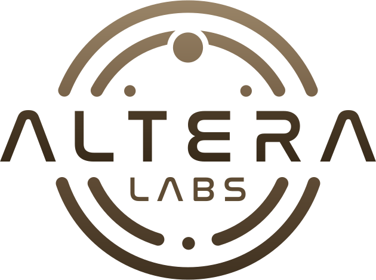
TONAL / MONO2. Walnut AtelierSingle warm-brown tonal ladder, taupe to deep walnut; kin to parchment so it sits warm on cream without going muddy.
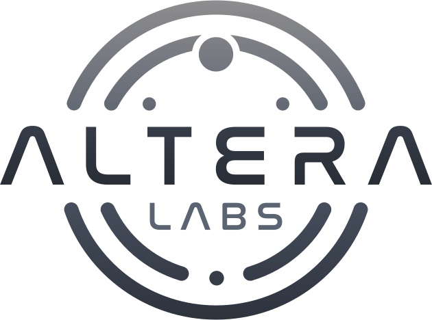
TONAL / MONO3. Slate FolioCool pewter-to-charcoal monochrome; the one neutral grey option, dark enough to anchor cleanly on warm cream.
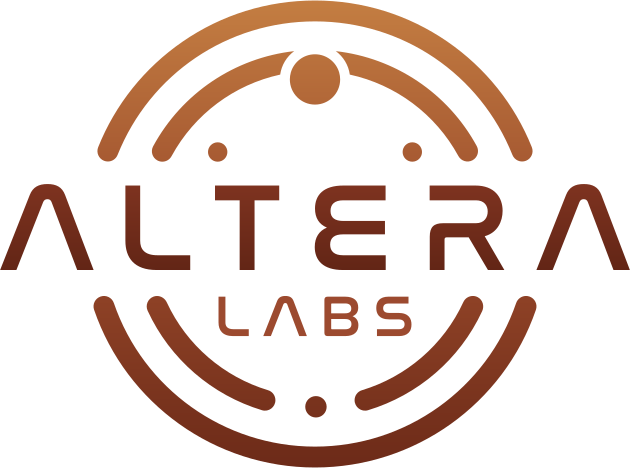
TONAL / MONO4. Terra MonotoneSingle terracotta hue across all values, clay-light to oxblood; warm and editorial, the deep wordmark holds firm on cream.
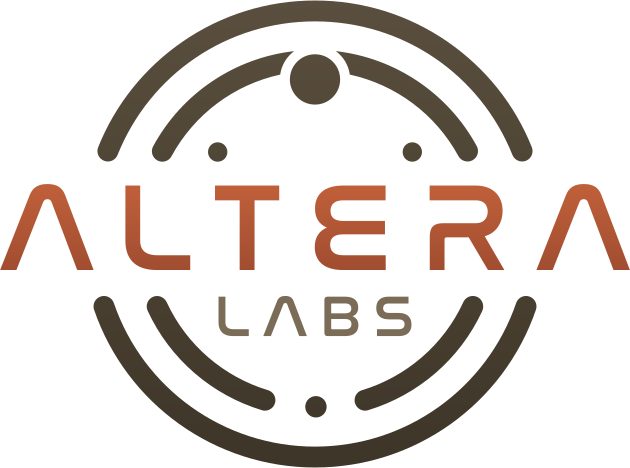
WARM EDITORIAL5. Baked Clay WordmarkTerracotta ALTERA is the warm hero on cream; quiet ink rings recede so the wordmark anchors and reads first.
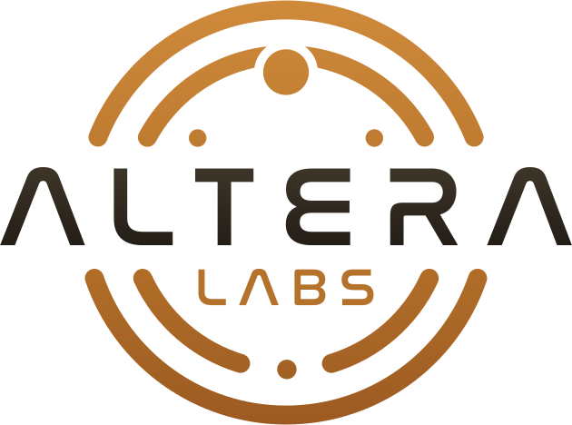
WARM EDITORIAL6. Golden OrbitOchre rings carry a soft metallic glow; near-black ink wordmark gives max legibility and contrast on parchment.
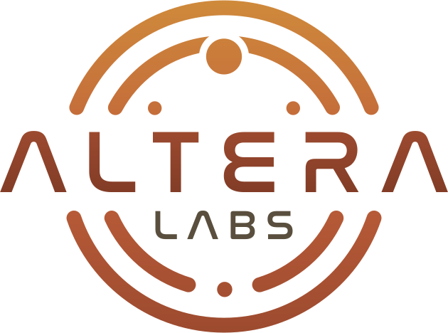
WARM EDITORIAL7. Autumn KilnKraft-to-clay ring ramp plus a solid deep-clay wordmark: fully warm, tonal, letterpress-autumn cohesion on cream.
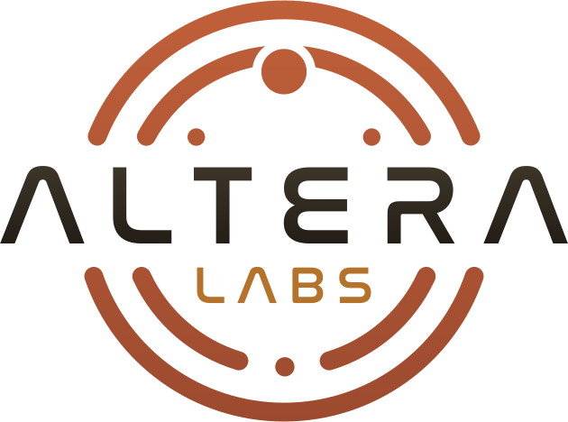
WARM EDITORIAL8. Press MarkDeep-ink ALTERA reads first; rich terracotta rings warm the mark and an ochre LABS adds a third baked accent.
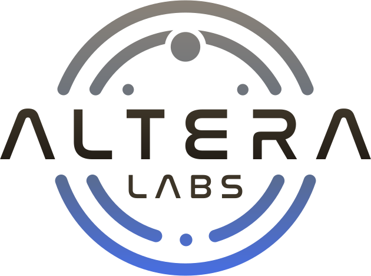
INK + ACCENT9. Signal TerminusPewter rings dive into one royal-blue toe; deep-ink ALTERA anchors. A single cool spark on warm cream.
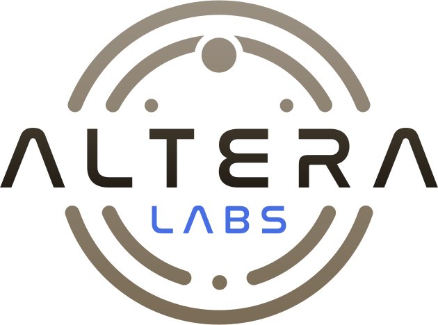
INK + ACCENT10. Blue SubscriptQuiet pewter rings, near-black ink wordmark, and the lone signal-blue lives in LABS. Maximum restraint on cream.
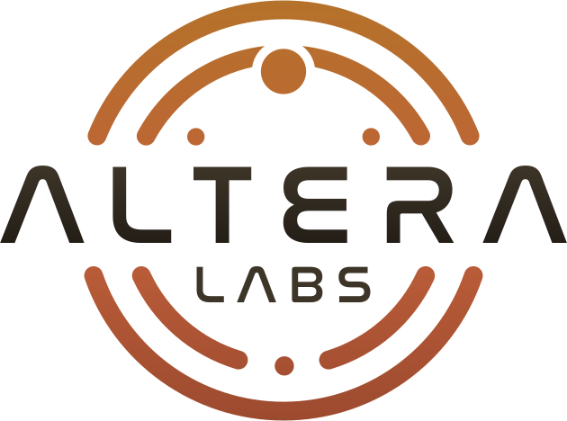
INK + ACCENT11. Kraft EmberWarm metallic rings ramp kraft into terracotta; ink wordmark holds. The spark goes warm, not blue, for press identity.
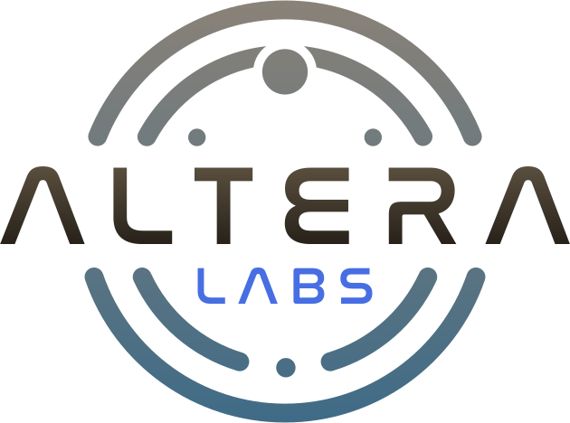
INK + ACCENT12. Slate GlowSoft slate-to-denim rings, warmest dark-ink ALTERA, and a surgical royal-blue glow isolated to LABS alone.
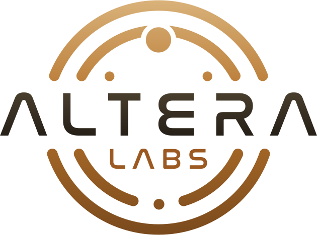
METALLIC13. Antique Bronze FoilWarm bronze ramp echoes foil-stamping; deep ink wordmark anchors hard on cream while ochre LABS ties it together.
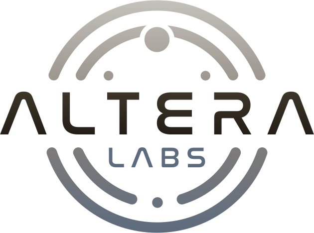
METALLIC14. Pewter & SteelCool silver-to-slate ramp reads as engraved metal against warm cream; ink wordmark stays maximally legible.
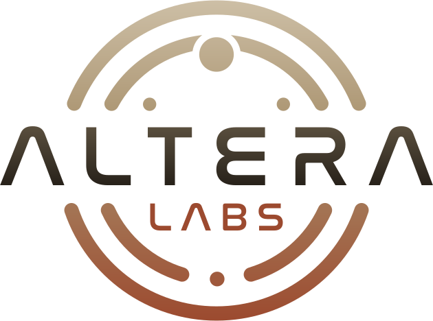
METALLIC15. Forged TerracottaPewter cools into terracotta for a struck-medal warmth; ochre-to-ink wordmark gives subtle metallic lift, fully grounded on parchment.
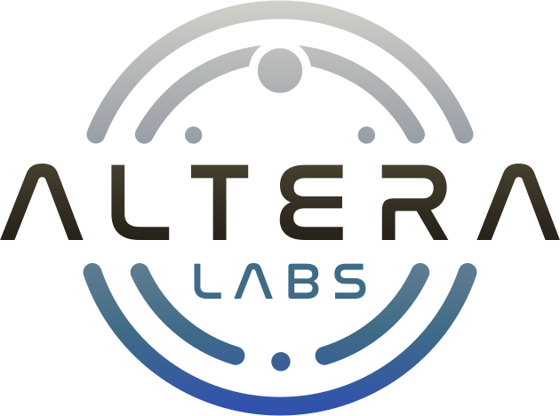
METALLIC16. Steel & DenimBright silver ramps down to reserved royal-blue for a cool engraved signal; warm ink wordmark keeps ALTERA the legible anchor.